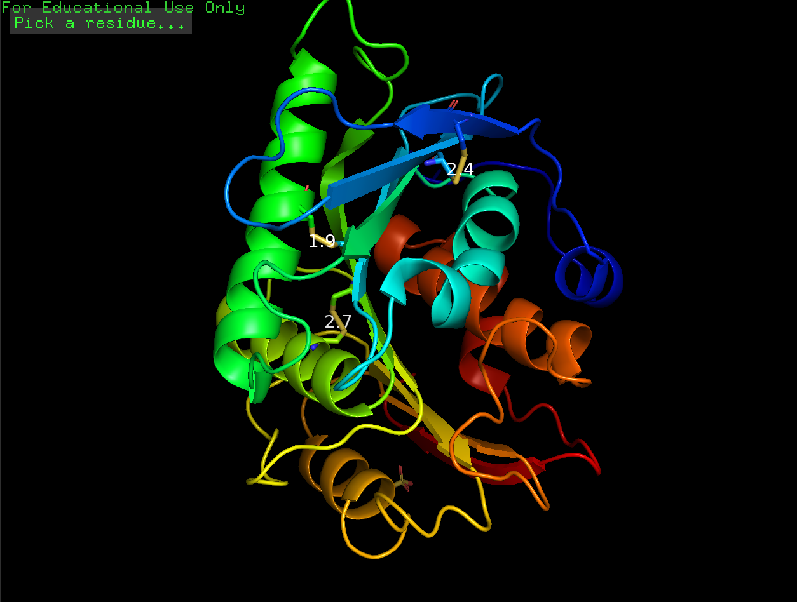
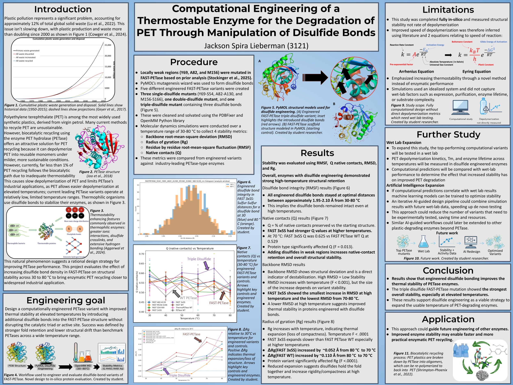

Computational Engineering of a Thermostable Enzyme for PET Degradation Through Manipulation of Disulfide Bonds

Plastic pollution accounts for ~12% of global solid waste, yet only ~10% of PET plastic is currently recycled. PETase enzymes offer a biocatalytic recycling pathway, but their poor thermostability limits industrial viability — wild-type PETase functions only between 30–40 °C, far below PET's glass transition temperature of ~75 °C. This study used computational protein design to engineer disulfide bonds into FAST-PETase, producing variants with significantly improved thermal stability validated through molecular dynamics simulations.
